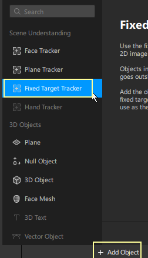

With Spark AR, you can use real world images as targets and place objects on them, similar to how marker based AR works.
Adding target tracking
>In the Scene panel, click Add Object and select Fixed Target Tracker

Add the target image - Select the target tracker in the Scene panel.
- Go to the Inspector.
- Next to Texture, click Choose File....
- Select the texture file that you want to trigger the effect.
Adding the effect that will be triggered - Add 2D text into the Scene.
- Drag the text object under the Target Tracker in the Scene panel, any object that’s a child of the target tracker will appear only when the target image is scanned.